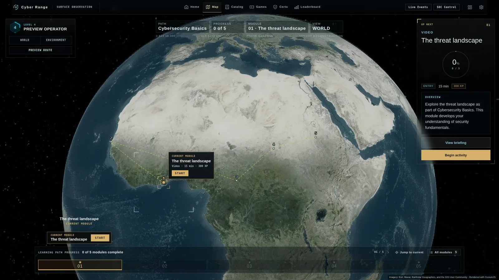

Six training minigames, a mission-control hub, and a first-time learner experience, designed and built for cyber ranges. Below is real gameplay, working prototypes, and the UX and game design thinking behind every decision.
Open to senior product design and UX roles on cyber training products. Based in Greater Montreal, working remotely with teams worldwide.
How do you get a learner to practice a security skill, not just read about it, in the five minutes they actually have?
My focus
Game design, UX and UI, and front-end build. I take a learning objective, find the mechanic that is the skill, and build it to embed in a training platform.
About the examples
Client-built games shown under neutral names, with client and product branding removed. The footage is recorded from working builds.
Real gameplay · Press play to load · No sound
01 / ARCADE SHOOTER
Countermeasure Defense
Teaches: matching attacker tactics to the right response
The problem
Analysts learn ATT&CK tactics and kill chain stages as a list of names. What the job needs is the next step: seeing a tactic and knowing at once whether the right move is to prevent, detect, contain, or recover.
The idea
Turn each response type into a weapon. Threats arrive labelled with a tactic, and only the matching countermeasure stops them. In ninety seconds a learner makes dozens of tactic-to-response calls. A second mode runs the same loop on the seven kill chain stages.
UX decisions
Four responses on keys 1 to 4, each with its own color, symbol, and label, so the choice never depends on color alone.
Selecting a response rings every threat it defeats. The hint is built into the control, not buried in a help screen.
A legend of every tactic and its response stays on screen, so a new learner can look it up mid-wave and a practiced one stops needing it.
High-priority threats move faster and hurt more, and some change tactic mid-flight, which forces a re-read instead of muscle memory.
What the learner gets
Fast, repeated practice at reading a tactic and choosing the response, with a combo and a live accuracy rating that reward staying right under pressure.
Real gameplay · Press play to load · No sound
02 / CARD GAME
Kill Chain Solitaire
Teaches: how an attack unfolds, phase by phase
The problem
Analysts can recite the seven kill chain phases but struggle to connect them to real tools and to each other. That sequence is what lets a defender work out how far an intrusion has gone and what comes next.
The idea
Borrow a game everyone already knows. Each card is an attacker tool tied to a phase, each pile is one attack, and a card only lands if it is the next phase in the chain. Closing a pile means the learner has rebuilt a full intrusion from first scan to final action.
UX decisions
Familiar solitaire rules and a one-screen briefing, so the first card moves within seconds.
The seven phases sit across the top as a tracker that lights up as each one is placed.
Valid slots glow while a card is dragged. A wrong drop sends the card back with no score penalty, so trying is safe.
Picking up a card shows what the tool does and where it sits in the chain, so the content is read in the moment it is used.
What the learner gets
A working mental model of how an attack progresses, built by placing real tools into the sequence again and again.
Real gameplay · Press play to load · No sound
03 / TRIVIA BOARD
Cyber Quiz Show
Teaches: core knowledge, by work role
The problem
Broad knowledge checks are the dullest part of any course. Learners click through, forget it, and the result says little about which areas are actually weak.
The idea
Keep the breadth and add stakes. Six categories each map to a work role, tiles rise in value with difficulty, and wager rounds ask the learner to bet on their own confidence before they see the question.
UX decisions
A widescreen board the learner reads at a glance: six categories across, value and difficulty down.
Every category header names the work role it belongs to, so the learner sees which job a gap affects.
A 30-second timer ring that shifts from cyan to gold to red, and a streak counter that makes momentum visible.
Right or wrong, the correct answer lights up on the spot, so a miss still teaches. Keys 1 to 4 answer without the mouse.
What the learner gets
A quick, honest read on what they know across six domains, with a grade and a balance that give them a reason to play the board again.
Real gameplay · Press play to load · No sound
04 / WAVE DEFENSE
Regex Defense
Teaches: regular expressions under pressure
The problem
Regular expressions show up in log search, detection rules, and data filters, and almost everyone learns them by copying from a cheat sheet. Reading regex is one thing. Writing it cold is another.
The idea
Make typing the pattern the only way to act. Hostile strings advance in waves, and a regex that matches a whole string takes it out. The first level drills quantifiers, the next moves to character classes and anchors, and later waves add characters that have to be escaped.
UX decisions
A command console at the center of the screen: the keyboard is the controller.
Live preview. Strings the pattern would match turn green while the learner types, before they commit to the shot.
One pattern that clears several targets builds the combo, so writing a general pattern beats picking them off one by one.
A briefing names the concept before each level, and a regex reference stays on screen during play, so looking it up is part of the loop.
What the learner gets
The jump from recognizing regex to producing it, practiced on short strings before it matters in a real query.
Real gameplay · Press play to load · No sound
05 / PATH PUZZLE
Port Connect
Teaches: ports and protocols
The problem
Port numbers are pure memorization, and flash cards are how most people try and fail to learn them. The facts do not stick because nothing is done with them.
The idea
Wrap the recall in a spatial puzzle. The learner links each port to its protocol by drawing a path, paths cannot cross, and the grid must be filled. The puzzle gives a reason to care about the pairing, and each link explains what the service is for.
UX decisions
Three guided boards with color hints, then free play where every tile is the same grey, so the pairing has to be recalled.
Draw with mouse, touch, or pen. A wrong link simply will not connect, and nothing is deducted for trying again.
Connecting a port opens its reference card: what it is for, how it gets attacked, and how to protect it.
Boards are generated and checked by a solver, so replaying means a new layout, not a memorized one.
What the learner gets
Port and protocol pairs they can recall without a lookup, learned through a puzzle they would play anyway.
Real gameplay · Press play to load · No sound
06 / STRATEGY
Attack Path Mapper
Teaches: threat modeling and detection coverage
The problem
Threat modeling is usually taught as a diagram to read. Learners see the finished attack path and never practice the reasoning that produces one, or the question that matters most: would we have caught it?
The idea
Hand the learner the adversary role. They pick a target organization, chain techniques into a route toward an objective, and run it. The simulation checks every step against the controls in place and shows where detection held and where it had gaps.
UX decisions
A mission dossier sets the target, its objectives, and the security controls already in place.
Techniques come from a searchable ATT&CK catalog and connect on a node graph, so the path is visible as it grows.
Running the simulation traces the route step by step, then names the control that caught each step.
No route scores 100. Every path trades reaching the objective against being seen, and Retry reopens the same board to refine it.
What the learner gets
Practice thinking like an attacker in order to defend: tracing a route, then judging which controls would stop or spot it.
PLAY ONE NOW
Keep Finance Online
A network defense game you can play right here. Inspect traffic, write the access rules, and keep the service up. Three rounds, about five minutes, then a debrief that replays your decisions.
Mission Control: one screen that always answers “what do I do next?”
An early prototype of mine for the home screen of a gamified cyber training platform. I designed it and built it as a working front end, so every interaction below can be tried, not just described.
A learner logs in with twenty minutes to spare. How do they see where they are, pick the next mission, and start it, without reading a manual or getting lost in features?
My role
UX and UI design, game systems design, and the front-end prototype. Screens, states, motion, and copy are mine, along with the design specs for ranks, level-ups, and the debrief.
How it is built
React, TypeScript, Vite, and Tailwind. The map is plain DOM with CSS 3D: four layers at different depths give parallax as the camera moves, with no canvas or game engine.
Three layers: what to do, who you are, what is happening.
A mission hub can drown a learner in status. I sorted every element into one of three layers and gave each a fixed place, so the eye learns the screen once.
Primary: the mission list, the numbered markers on the map, and the current objective card with its one button.
Secondary: identity and level, the active operation, and the control to change learning path.
Ambient: the live ticker, global events, satellites, and vessels. They make the world feel alive and never ask for a decision.
Say the one thing that matters, then get out of the way.
The first-run tutorial is three steps. It tells the learner that the learning path is the main mission and everything else on the map is optional, then spotlights the first mission and the button that starts it.
The learner completes each step by doing it, not by pressing Next. A wrong click shakes the hint instead of blocking.
The map stays live behind the dimmed overlay, so the tutorial teaches the real screen, not a slideshow.
A longer eight-step tour is available on demand for learners who want it.
Starting a mission spins up a live environment, which takes time and can fail. I put that whole process into a single button whose label is the state, so there is never a second place to look.
Idle, loading, ready, continue: four labels on the same control, with progress shown inside it.
A long press during loading aborts, with a fill bar that shows the hold. Rapid repeat clicks are caught and explained.
Locked missions say why they are locked. Hovering a mission eases the camera to its marker and cross-fades the objective card.
Changing learning path is a big decision that should feel reversible. The selector opens as a sheet over the map, with a full-screen grid for people who want to browse.
Filter by category, sort by name, move with arrow keys, close with Escape.
Each card shows duration and last activity before any commitment.
A confirm step says exactly what will change and that current progress is saved.
Two tracks: how far you have come, and what you are good at.
A single XP bar tells a security team nothing. I split progress into a player level for motivation and work-role XP for meaning, so one mission can advance a learner as a Cyber Defense Analyst and as an Incident Responder at the same time.
Ten player levels on a rising XP curve, from 1,000 XP for level 2 to 27,000 for level 10.
Work-role XP is shown as a breakdown per role, with rank-ups listed only when a rank actually changed.
Celebrations are additive, not disruptive: inline, about three seconds, skippable, and never a full-screen takeover.
Long ladders fail when rank 17 looks like rank 18. Each of the eight tiers gets a new helmet silhouette, each rank inside a tier steps through four metals, and stars count position, so shape, color, and number all say the same thing.
Eight tiers, from Initiate to Legendary.
Four metals inside each tier: cyan, bronze, silver, gold.
Readable at avatar size, which is where a rank is seen most.
Give people a reason to look at the map again tomorrow.
A static hub gets ignored after the first week. Timed operations, global events, and a live feed make the map change between visits, and each one leads back to training.
A weekly operation with a narrative, a threat actor, affected sectors, and a countdown, linked to related missions.
Event cards arrive a few at a time, dismiss themselves, and can be switched off for learners who want quiet.
A scrolling feed with severity chips that pauses on hover and expands on click or keyboard.
Side games that reward curiosity without derailing the course.
Exploration is labelled as exploration. Quick games live on the map and in the feed for learners who want a break that still exercises a skill, and they pay small XP so they never beat doing the mission.
Minigame markers sit on the map beside mission markers, visually distinct.
Three quick interactions built into the world: a pattern-matching grid, a signal race, and a rhythm challenge with three difficulty levels.
Rewards are small by design, about 20 to 80 XP per win.
The debrief shows the grade and then accounts for it. Learners see what they lost and what they earned, in plain categories, with a clear way to try again.
A letter grade with four time bands, from optimal to failed.
Points deducted for hints, wrong attempts, and time. Bonus points for first-try accuracy, no hints, and streaks.
Three exits: leave, retry, or play the next mission. A fail still awards partial XP and points to review material.
Test the core claim. Can a new learner say what their next action is within ten seconds of landing? That is the number I would measure first.
Connect it to real data. Missions, progress, and events are sample data here. The path selector and the map need one shared source of truth.
Finish accessibility. The feed and results are keyboard and screen-reader ready. Map markers and panels are next, along with reduced motion across the whole screen.
Design for smaller screens. This version is desktop only. A tablet layout would start from the mission list, not the map.
UI / UX CASE STUDY
Product design: a first-time experience for a gamified cyber range.
Onboarding, learning paths, and mission entry. Portfolio examples use sample content and neutral branding.
The problem
How does a new learner get from choosing a training path to understanding, and starting, the next activity?
Design approach
Learner flow, interface design, and interactive prototyping: compare onboarding directions, make module status clear, and connect the map to the briefing.
What to explore
Load the animated globe and zoom into a module location, then compare the path selection and onboarding flows. These are design prototypes with sample progress.

The learning path lives on the map, with the next module always one click away. Needs an internet connection for imagery · Open full screen ↗
Seven design directions
From a live globe and a world map to a direct-path SOC view, for military, enterprise, and friendlier audiences.
Fun is the easy part. Making it teach is the work.
Most “gamified” training is a quiz with points on top. I start from the skill and work outward. Every concept has to pass these eight rules before anything gets built.
Start from the job, not the game
Before any mechanic or art: which role is this for, which skill does it drill, and what should someone do better after ten sessions? If I cannot answer in a sentence, it is entertainment, not training.
One skill per game
A game that teaches ports, protocols, and firewall rules at once teaches none of them. Each game isolates a single skill so the score means something.
The knowledge is the controller
You cannot win by reflexes or by clicking fast. The only way to act in the game is to use the skill, so the mechanic falls apart for anyone who does not know the material.
Recall beats recognition
Picking from four options is recognition. Typing the pattern, placing the card, or drawing the route is recall, and recall is what holds up on the job.
Feedback teaches while you play
A wrong move explains itself on the spot, in the game, in under a second. Nobody waits for an end screen to find out what they got wrong.
Harder means deeper, not faster
Later rounds add ambiguity, exceptions, and trade-offs. Speeding up the clock only tests typing.
Score accuracy first
Speed is a capped bonus. Missing a real threat costs more than a false alarm, the same way it does in a SOC.
Five minutes, worth replaying
Short enough for a coffee break, with content that reshuffles every run so a learner cannot memorize the answers.
WHAT IT DOES FOR LEARNERS
Training people open, finish, and come back to.
These are the design goals each game is built toward. They are intentions I design for, not measured results.
They start
A five-minute game with one clear goal is easier to open than a forty-minute module. The first action happens in seconds, not after three screens of reading.
They practice, not just read
Every round is retrieval practice: the learner has to produce the answer and act on it. That is the part passive content skips.
They find out why
Feedback lands on the decision that caused it, so a mistake turns into the next correct move instead of a red mark at the end.
They come back
Fresh content each run and a score to beat give people a reason to replay, and repetition spread over days is what makes a skill stick.
You can see it
The games are built to report score and completion to the host platform, so an instructor sees who has the skill and who needs help.
WHAT I BRING TO YOUR TEAM
A designer who already knows your product, your learner, and your stack.
Most designers need six months to learn what a cyber range is. I have designed the learner journey and the games inside one, and I can build what I design.
20 yearsin games and product design
6 gamesdesigned and built for a commercial cyber range
Design → buildfrom strategy through implementation
EN / JAgames built for two languages from the start
Learner experience
Onboarding, learning paths, mission briefings, objectives, feedback, and debriefs. The whole route from first login to first completed activity.
Gamification that teaches
Minigames, progression, and scoring that drill a real skill, designed against a written gate so fun never replaces learning.
Security framework literacy
The games on this page are built on MITRE ATT&CK tactics and techniques, the Cyber Kill Chain, and NICE work roles. I can talk to your content team in their terms.
Dense, expert interfaces
Game HUD experience applied to consoles, maps, and dashboards: clear hierarchy, readable status, and keyboard-first interaction.
Design systems
Component libraries and UI standards that let a team scale screens and content without losing consistency. I ran UX standards across nine studios at once.
Front-end build
React, TypeScript, Next.js, Phaser, and Three.js on the web. UMG and CommonUI in Unreal Engine. Prototypes your engineers can read, or production UI.
MY FIRST 90 DAYS
What you would get, in order.
Days 1 to 30 · Learn and auditWalk the product as a new learner and as an instructor. Map where people stall, and agree with product and content on the three fixes that matter most.
Days 31 to 60 · Ship one flow, prototype one gameRedesign the highest-impact flow through to a testable build, and take one learning objective from concept to a playable prototype.
Days 61 to 90 · Make it repeatableTurn what worked into components, patterns, and a game design checklist the team can use without me in the room.
Roles I fit
Senior or Principal Product Designer, UX / UI Lead, learning experience or game designer for training, and hybrid designer-developer roles.
How I work
Daily with engineers and producers, early with content developers and subject experts, and in code when a prototype answers the question faster than a meeting.
Background
Disney, Sony, Riot Games, Tencent, Twitch, and AppLovin on the game side. Consulting on mission-critical products for high-security clients since 2025.
I am open to full-time and contract roles, remote from Greater Montreal. I can walk you through any game or flow on this page, the decisions behind it, and how I would approach your product.